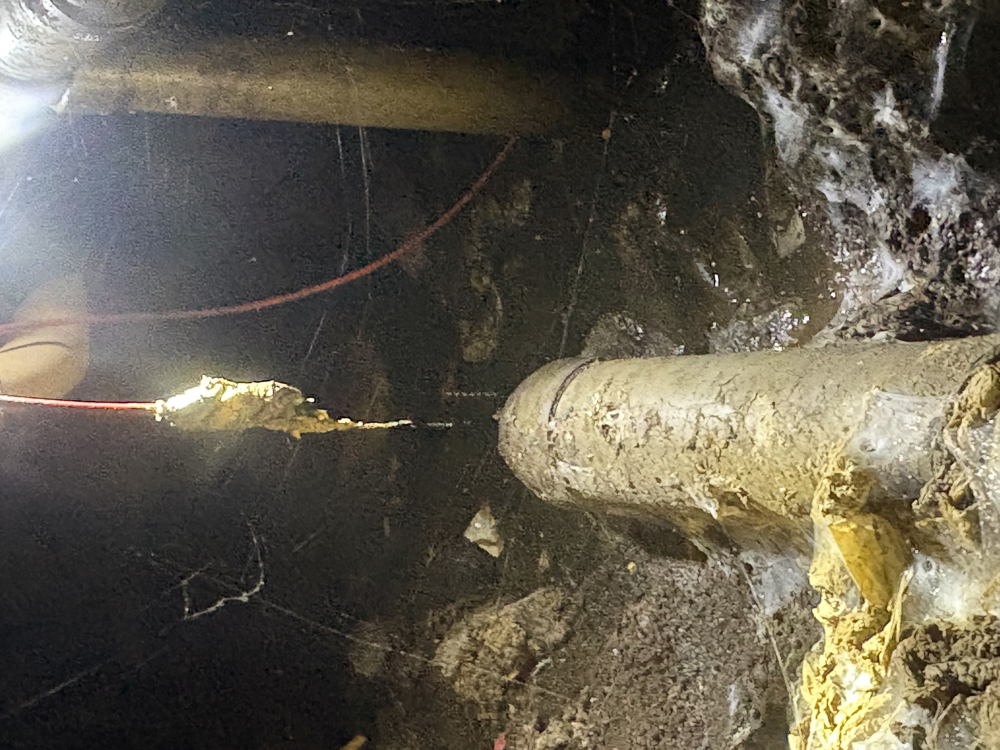
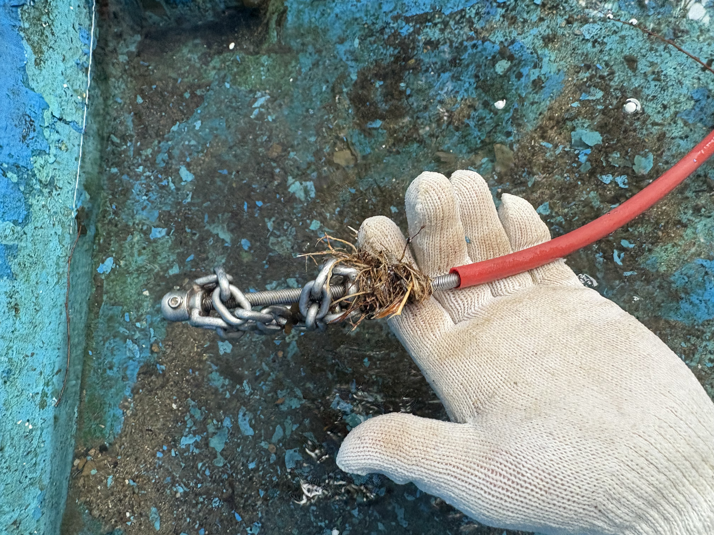

시흥 누수탐지 전문 서비스
원케어 배관은 시흥 누수탐지부터 배관 막힘 해결까지 함께 진행하는 지역 전문업체입니다. 증상에 따라 최적화된 장비와 공법을 적용해 배관의 수명을 연장시켜 드립니다.
싱크대 막힘
기름 슬러지로 꽉 막힌 싱크대 배관을 스케일링으로 완벽하게 복구합니다.
하수구 배관 소통
이물질로 인한 역류 현상을 정밀 진단하여 배관 끝까지 시원하게 통수합니다.
변기 막힘 해결
강력한 석션 장비와 전문 관통기를 동원하여 변기를 뜯지 않고 해결합니다.
시흥 누수탐지
장비로 누수 위치를 먼저 특정한 뒤 필요한 부분만 정확히 보수하는 정밀 진단 서비스입니다.
시흥 수도·화장실·천장 누수 진단
시흥 수도 누수는 계량기 주변이나 벽 속 배관 이음부에서 물이 새어나오는 경우가 많아, 사용하지 않을 때도 계량기가 계속 돌아가거나 특정 벽면이 축축해지는 증상으로 나타납니다. 반면 화장실 누수는 방수층이나 배수 배관의 실링이 손상되며 발생하는 경우가 대부분으로, 아랫집 천장에 얼룩이 생기거나 타일 틈으로 물이 스며드는 형태로 확인됩니다. 천장·벽면·바닥 누수는 원인이 겹쳐 있는 경우가 많아 육안 확인만으로는 정확한 위치를 특정하기 어렵기 때문에 장비를 활용한 정밀 진단이 필요합니다.
수도 배관 누수
수도 계량기가 사용하지 않을 때도 계속 돌아가거나 특정 구간의 수도 요금이 갑자기 늘었다면 벽체나 바닥 속 급수 배관에서 누수가 진행 중일 가능성이 있습니다.
화장실 누수
욕실 방수층이나 배수 트랩 주변 실리콘이 노후되면 타일 틈이나 벽면을 따라 물이 스며들어 아랫집 천장 누수로 이어지는 경우가 많습니다.
천장·벽면·바닥 누수
얼룩의 위치와 확산 속도, 곰팡이 발생 여부를 함께 살펴보면 누수인지 결로인지 구분하는 데 도움이 되며, 정확한 판단은 장비 진단으로 확인합니다.
시흥에서 누수가 자주 발생하는 원인
시흥시는 준공 후 시간이 지난 아파트와 주택이 함께 있는 지역으로, 노후 배관과 보일러 난방 배관에서 시작되는 누수가 꾸준히 접수되고 있습니다. 정왕동, 배곧, 은행동, 대야동, 목감동, 월곶동, 장현동 등 시흥 전지역에서 아래와 같은 원인으로 문의가 이어지고 있습니다.
노후 급수·배수 배관
설치된 지 오래된 아연도 강관이나 동관은 내부 부식이 진행되며 이음부나 관 벽 자체에서 미세한 누수가 시작될 수 있습니다.
욕실 방수층 손상
방수 시공 후 시간이 지나면 방수층이 갈라지거나 들뜨면서 물이 바닥 슬래브 아래로 스며들어 아랫집 누수로 이어질 수 있습니다.
보일러 난방 배관 누수
겨울철 난방 배관의 압력 변화나 동파로 누수가 발생하면 바닥이 국소적으로 뜨겁거나 특정 구간만 젖어 있는 증상이 나타납니다.
아랫집 천장 누수 시 확인할 점
아랫집 천장에 물이 새기 시작했다면 얼룩의 모양과 위치, 물이 새는 시점을 먼저 확인하고, 자가 판단으로 공사를 진행하기보다 장비를 활용한 정밀 진단을 먼저 받아보는 것이 안전합니다.
누수탐지 장비와 작업 과정
단순히 의심되는 부위를 뜯어보는 추측 공사와 달리, 원케어 배관은 청음식 누수탐지, 열화상 카메라, 배관 압력 테스트 등 장비를 활용해 누수 위치를 먼저 특정한 뒤 필요한 부분만 정확히 보수합니다.

내시경·청음식 정밀 진단
배관 전문 내시경과 청음식 누수탐지 장비를 함께 투입하여 막힘·누수의 정확한 위치와 원인을 실시간으로 파악합니다. 과잉 진단 없이 꼭 필요한 작업만 안내드립니다.

열화상·압력 테스트 & 보수
열화상 카메라와 배관 압력 테스트로 누수 구간을 다시 한번 교차 확인한 뒤, 강력한 회전 노즐과 고압 수압으로 배관 내벽의 슬러지와 이물질을 완벽하게 제거합니다.
탐지 결과에 따라 필요한 보수 범위를 먼저 안내해 드리며, 불필요한 철거나 공사 없이 원인이 확인된 부위만 정확하게 해결해 드립니다.
시흥 누수탐지 비용 안내
정확한 비용은 누수 위치와 배관 상태, 필요한 장비에 따라 달라질 수 있어 전화 상담 시 현장 상황을 먼저 확인해 드립니다. 추가 비용 걱정 없는 원케어 배관의 정직한 견적입니다.
ONE-CARE STANDARD PRICING
합리적인 비용으로 최상의 해결책을 제공합니다
* 위 금액은 기본 작업 기준이며, 현장 상황(배관 구조, 특수 장비 사용 등)에 따라 변동될 수 있습니다.
시흥 전지역 빠른 상담 가능
정왕동, 배곧, 은행동, 대야동, 목감동, 월곶동, 장현동, 능곡동, 신천동, 매화동, 연성동 등 시흥 전지역 어디에서 연락 주셔도 빠르게 상담해 드립니다. 지역에 따라 출동 시간에 차이가 있을 수 있어 정확한 도착 시간은 전화 상담 시 안내해 드립니다.
시흥 누수탐지 자주 묻는 질문
상담 전 자주 문의하시는 내용을 정리했습니다.
Q.시흥 누수탐지 비용은 얼마인가요?
A. 누수 위치, 배관 상태, 탐지 장비 사용 여부에 따라 비용이 달라질 수 있어 현장 상황을 확인한 후 정확한 금액을 안내해 드립니다.
Q.아랫집 천장에 물이 샐 때 바로 누수탐지가 필요한가요?
A. 천장 누수는 수도 배관, 난방 배관, 욕실 방수층 등 원인이 다양하므로 확산되기 전에 빠른 점검을 받아보시는 것이 좋습니다.
Q.시흥 전지역 상담이 가능한가요?
A. 정왕동, 배곧, 은행동, 대야동, 목감동, 월곶동, 장현동 등 시흥 전지역 상담과 출동이 가능합니다.
Q.장비로 누수 위치를 정확히 찾을 수 있나요?
A. 현장 상태에 따라 청음식 누수탐지, 열화상 카메라, 배관 압력 테스트 등을 활용해 육안으로 확인하기 어려운 누수 원인을 함께 확인합니다.
Q.누수탐지 후 공사까지 한 번에 가능한가요?
A. 탐지 결과와 현장 상태에 따라 필요한 보수 공사 범위를 안내해 드리며, 원인이 확인된 부위만 정확하게 진행합니다.
작업 사례 예시
시흥 누수탐지 및 배관 작업 현장 사진입니다. 실제 현장 사진은 추후 최종 이미지로 교체될 수 있습니다.







지금 바로
전문가의 상담을 받으세요
정왕동부터 배곧, 은행동까지 시흥 전지역 어디든 간단한 질문부터 긴급 출동 견적 문의까지 무엇이든 물어보세요. 전문 엔지니어가 상세히 답변해 드립니다.
24시간 고객센터
010-9164-6943
품질 보증 서비스
작업 후 동일 증상 발생 시 100% 무상 AS 보장